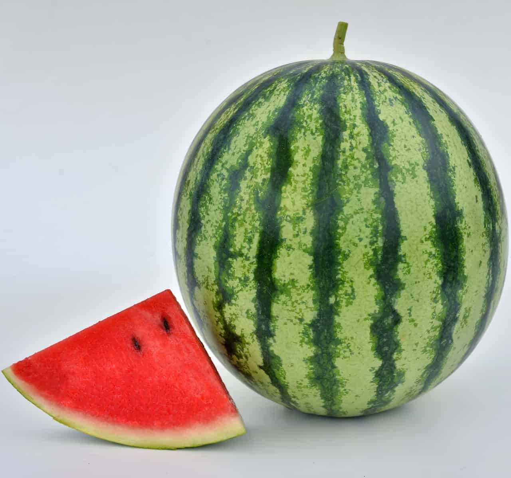

 Watermelon (Citrullus lanatus) is a flowering plant species of the Cucurbitaceae family. A scrambling and trailing vine-like plant, it was originally domesticated in Africa. It is a highly cultivated fruit worldwide, with more than 1,000 varieties. Wild watermelon seeds have been found in the prehistoric Libyan site of Uan Muhuggiag. [2] There is also evidence from seeds in Pharaoh tombs of watermelon cultivation in Ancient Egypt. Watermelon is grown in favorable climates from tropical to temperate regions worldwide for its large edible fruit, which is a berry with a hard rind and no internal divisions, and is botanically called a pepo. The sweet, juicy flesh is usually deep red to pink, with many black seeds, although seedless varieties exist. The fruit can be eaten raw or pickled, and the rind is edible after cooking. It may also be consumed as a juice or as an ingredient in mixed beverages. Considerable breeding effort has developed disease-resistant varieties. Many cultivars are available that produce mature fruit within 100 days of planting. In 2017, China produced about two-thirds of the world total of watermelons